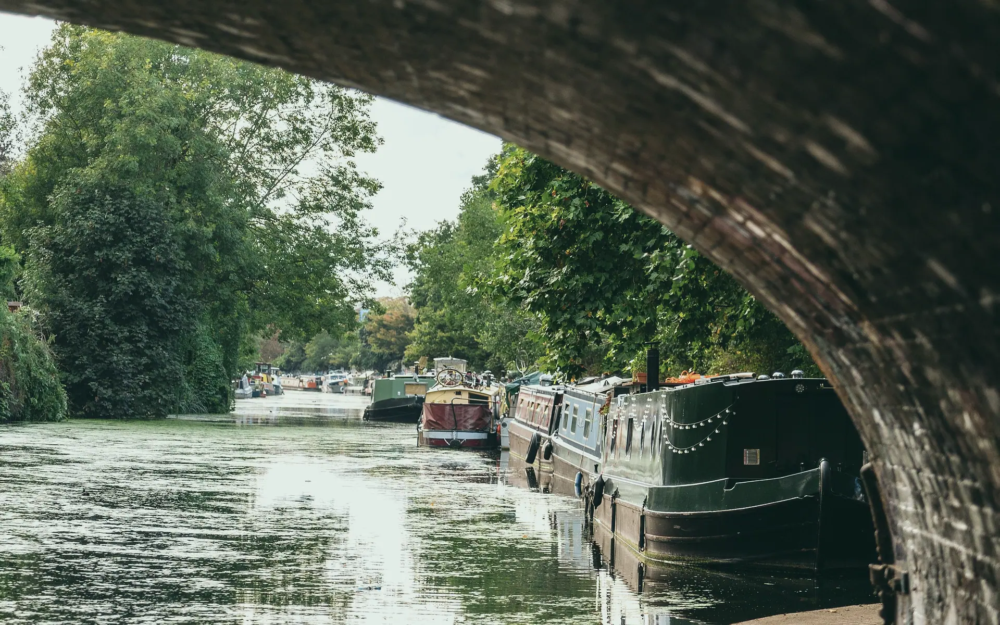
Eleven locks from our wharf to Oxford, a week on the Oxford Canal
Six narrowboats for two to ten people. Handover on Fridays at 14:00, a full hour at the tiller before you cast off, and your first lock worked with one of us standing beside you.
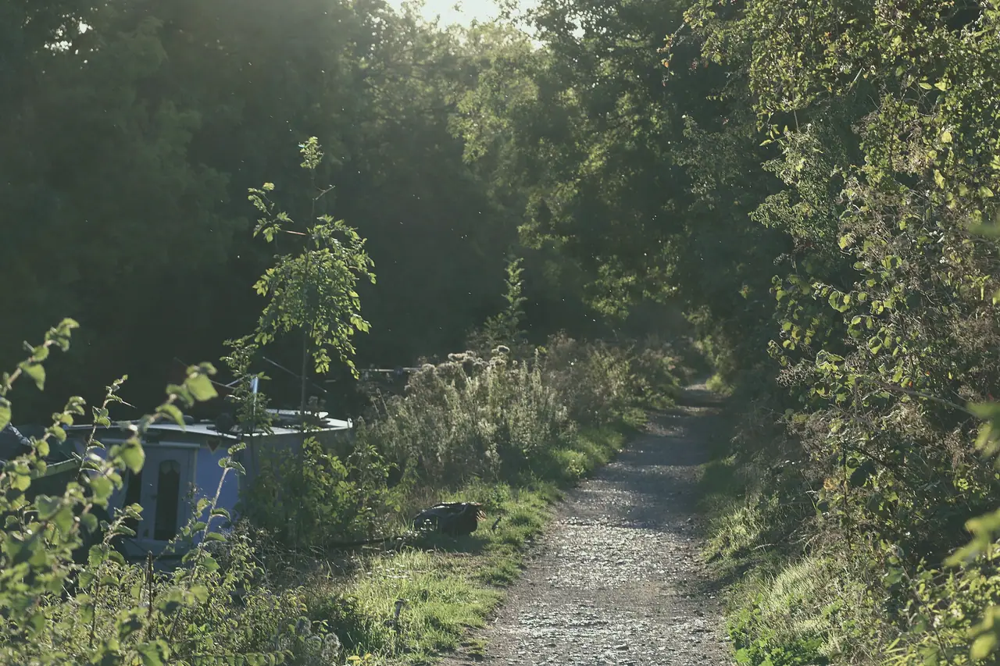
Three miles an hour is fast enough
Withybed Wharf sits at the foot of Heyford Common Lock on the Oxford Canal: 11 locks and 13.5 miles from the end of the line in Oxford, 28 locks from the Grand Union at Napton.
We have six boats, from forty-five feet for two to seventy feet for ten. Every one is handed over in person. You work your first lock with us beside you, not with a video.
- Handover
- Fridays, 14:00
- Back by
- 09:30
- Boats
- 6, sleeping 2 to 10
- Dogs
- On 3 of them
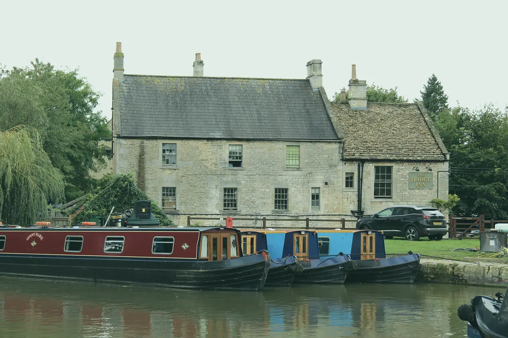
Dated departures
Seven of the sailings we are filling first. Any Friday from 5 March works; these are the ones with a route already planned.
- Fri 2 Apr – Fri 9 Apr Oxford and backWeek from £895 details
- Mon 12 Apr – Fri 16 Apr The Banbury turnMidweek break from £455 details
- Fri 7 May – Mon 10 May Thrupp for the weekendWeekend break from £395 details
- Fri 28 May – Fri 4 Jun Cropredy and the Claydon flightWeek from £895 details
- Fri 9 Jul – Fri 16 Jul The upper Thames to EynshamWeek from £1,395 details
- Mon 16 Aug – Fri 20 Aug Four RiversMidweek break from £685 details
- Fri 24 Sep – Mon 27 Sep Somerton and King's SuttonWeekend break from £395 details
Six boats, one to hold
Short enough to turn on the northern routes or long enough to sleep ten: the centre card is the one most first-timers choose.
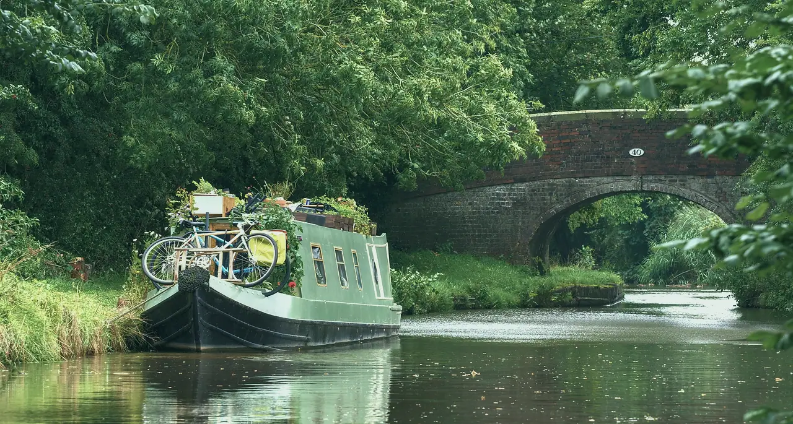
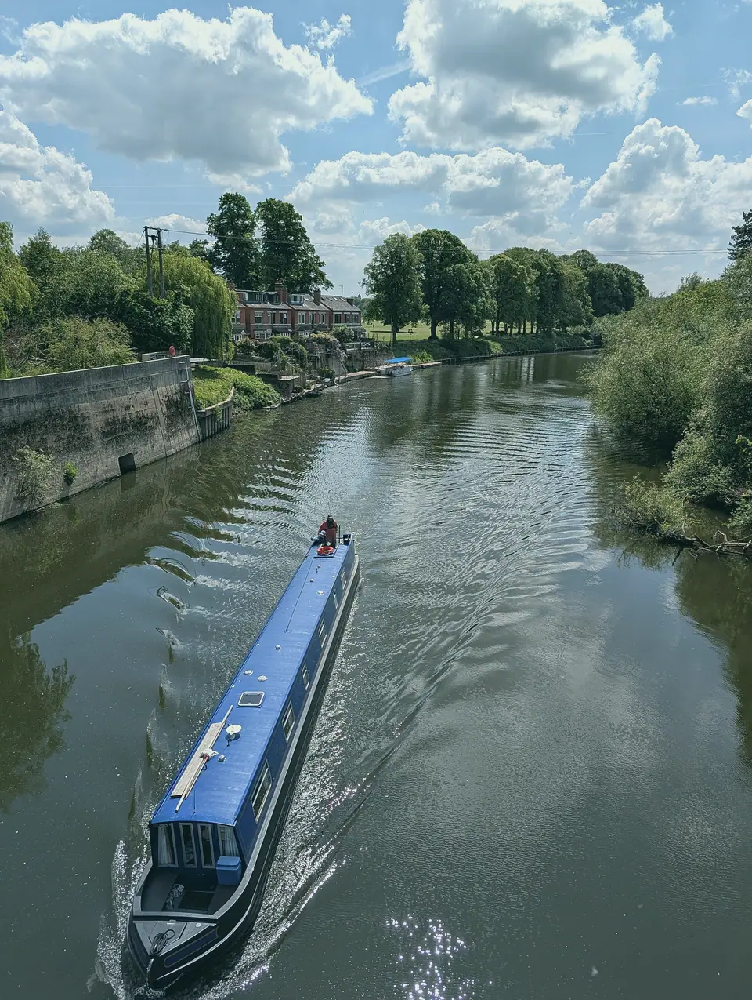
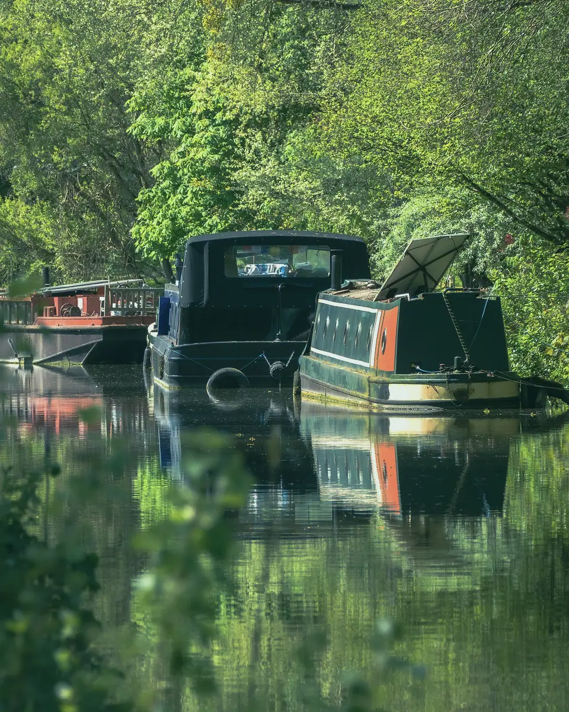
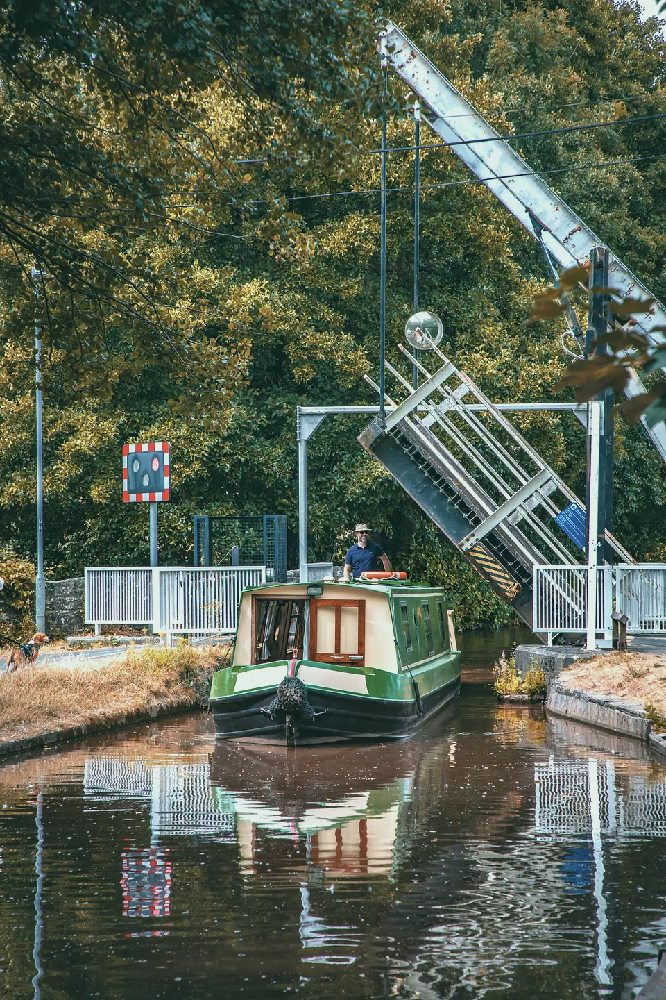
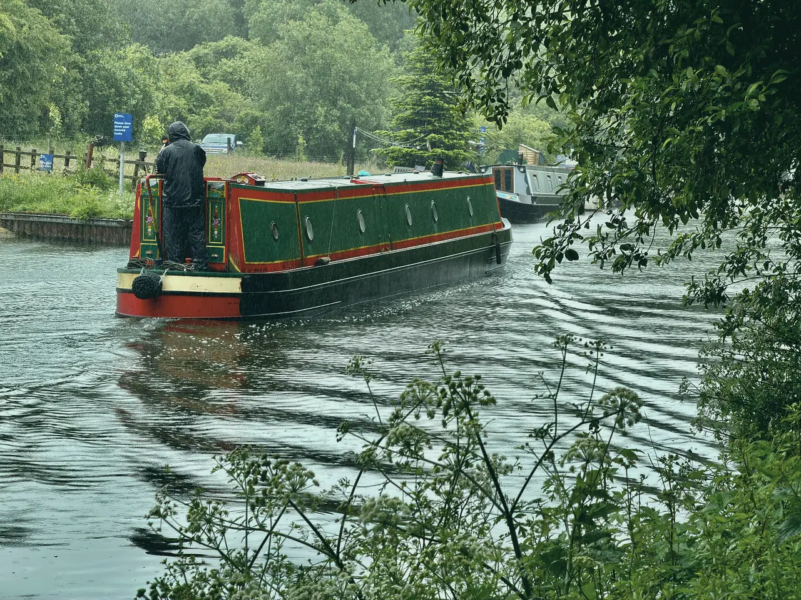
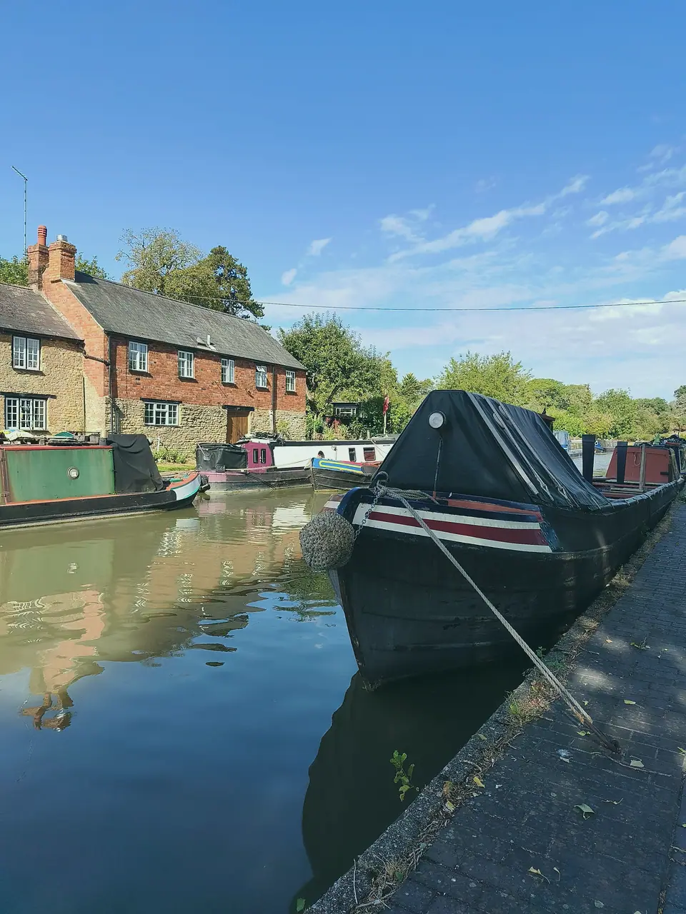
Kingfisher, 2 of 6
Eight routes, none of them hurried
Hours are worked out at three miles an hour plus twelve minutes a lock. The longest day on any route is 5 h 50, and every route is back at the wharf by 09:30 on the last morning.
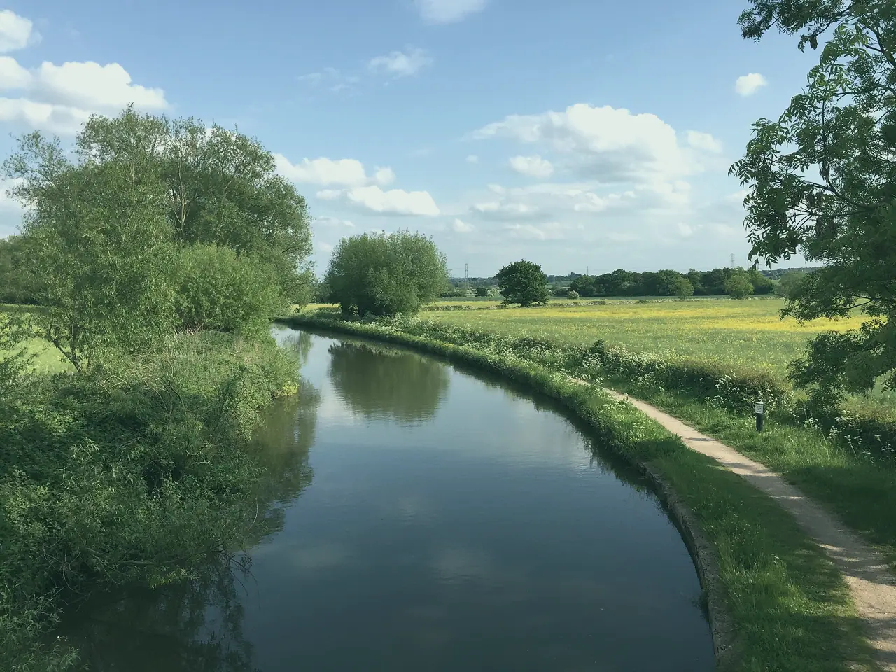
Never steered a boat? Good.
Most of our guests have not. The handover is an hour on the water: how to stop (the hard part), how to leave a lock with the gates behind you, and what to do when a boat comes the other way round a blind bend.
On Mute Swan and Grey Heron the handover is two hours, and we ask that one person in the crew has steered a long boat before.
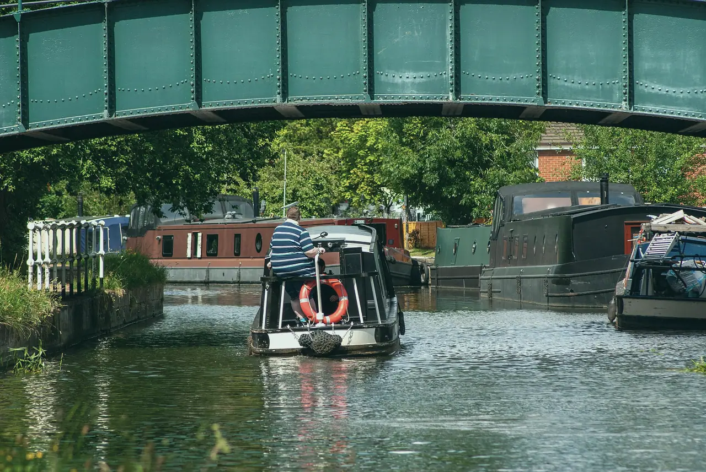
The steerer lines up early. The boat does the rest.
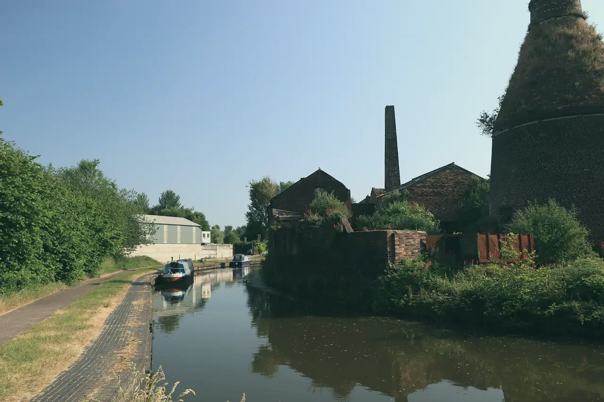
Come and see the wharf
Withybed has been two people and a diesel engine since 2009, and is now six boats and a workshop where every engine is stripped and rebuilt over the winter.
Withybed WharfCanal Lane
Lower Heyford
Oxfordshire
OX25 5ZZ
| April to OctoberMonday to Saturday | 09:00 – 17:00 |
|---|---|
| April to OctoberSunday | 10:00 – 14:00 |
| November to MarchTuesday to Saturday | 10:00 – 16:00 |
Lower Heyford station is a short walk from the wharf, and the Oxford train is about twenty minutes. By car, the wharf has parking for each crew for the length of the hire.